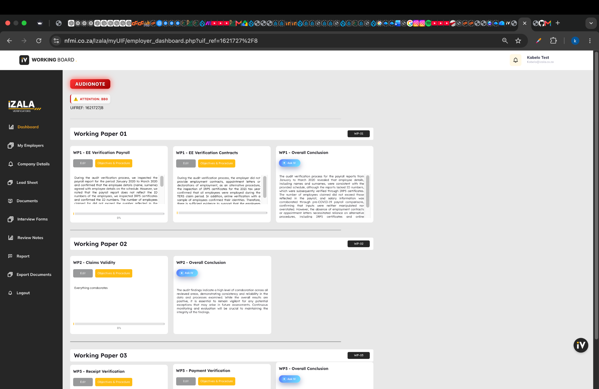
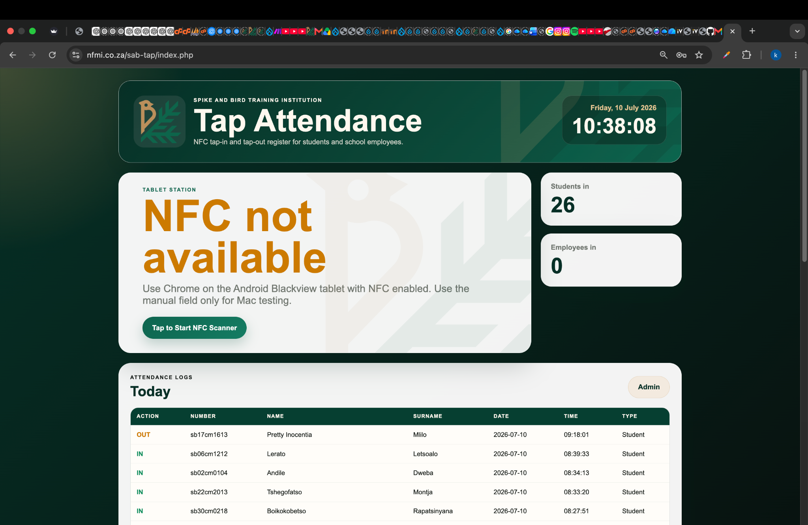
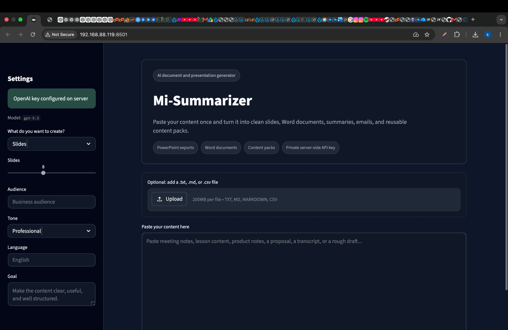
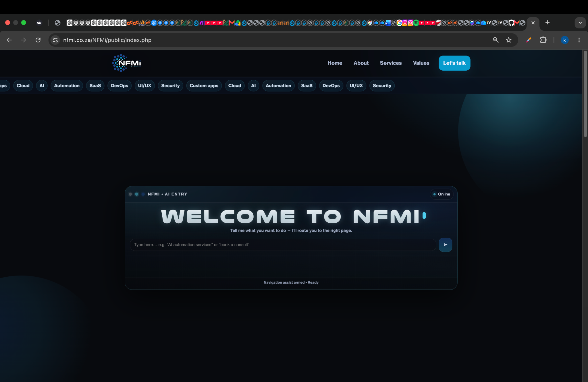
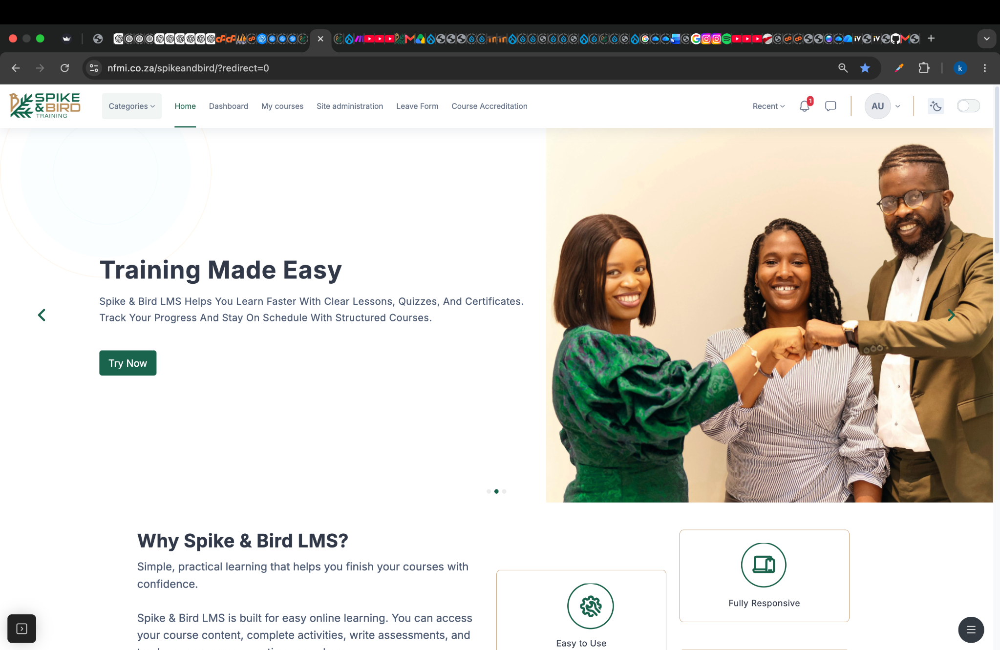
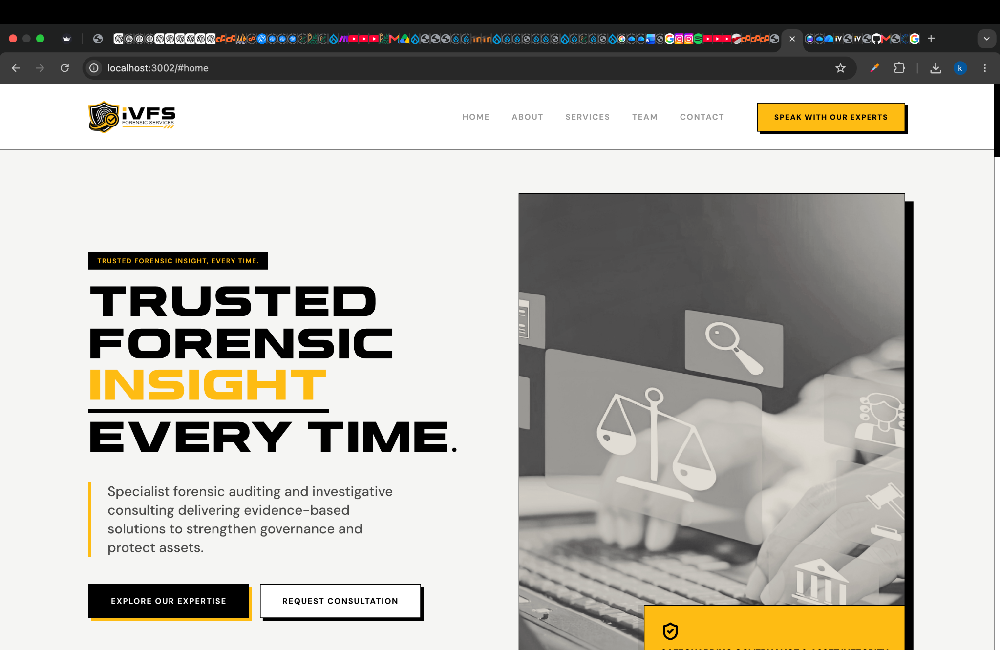

Full-stack development
PHP, JavaScript, HTML, CSS, responsive interfaces and business workflows.
Software Developer · Database Specialist · AI Developer
I develop PHP/MySQL business applications, AI-powered tools, learning platforms, NFC attendance systems, dashboards, APIs and workflow automations.
About
I am a software developer with experience building internal verification systems, database-driven dashboards, automated reports, AI document tools and learning platforms.
My approach combines full-stack development, database design, process automation and practical user experience. I enjoy solving operational problems and reducing repetitive manual work.
Core capabilities
PHP, JavaScript, HTML, CSS, responsive interfaces and business workflows.
MySQL, SQL, schema design, imports, exports, data cleaning and reporting.
OpenAI API tools, OCR workflows, webhooks, JSON integrations and Make automation.
Moodle, WordPress, cPanel, phpMyAdmin, REST APIs and PDF generation.
Selected work
Live projects and private operational systems created for real business use.

Enterprise workflow system
A PHP/MySQL platform for employer records, working papers, interviews, supporting documents, review notes, reporting and AI-assisted conclusions.
Open live system
NFC attendance platform
A tablet-friendly system for NFC tap-in and tap-out, live attendance counts, card registration, daily logs and CSV exports.
View live project
AI productivity application
An AI tool that turns source material into PowerPoint presentations, Word documents, summaries, emails and reusable content packs.
Private internal application
Corporate technology website
A modern dark-themed corporate website presenting software, cloud, AI, automation, SaaS, DevOps, UI/UX and security services.
View live project
Learning management system
A branded Moodle environment for online courses, assessments, learner progress, certificates and institutional workflows.
View live project
Corporate website
A bold, responsive website for forensic auditing, risk assessment, digital forensics, due diligence and advisory services.
Local build · deployment pendingExperience
Building PHP/MySQL applications, AI tools, dashboards, reports, document workflows, APIs and learning platforms.
Database management, data cleaning, testing, optimisation, reporting and WordPress/C# development support.
Data interpretation, learner information management, project coordination and reporting.
Hardware, software, workstations, connectivity troubleshooting and user support.
Education
Varsity College · 2018
Contact
Available for software development, database, automation, AI integration and technical support opportunities.